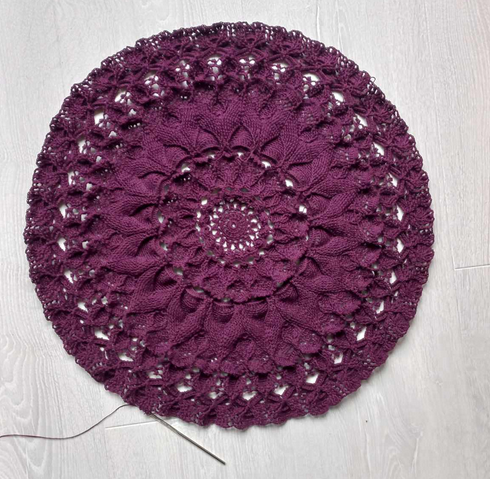
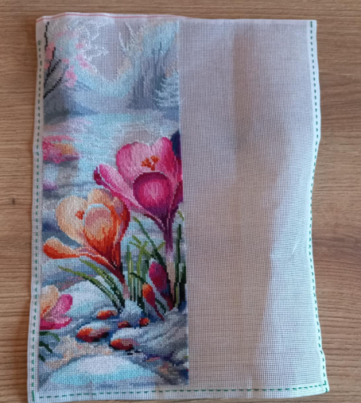

Crochet
Crochet was my first entry to the world of fiber arts, and to this day I consider myself a crocheter first and foremost. I mostly do lace crochet doilies, though I dabble in other forms as well, and recently made myself a hat.
Cross stitch
Cross stitch is one of my newer hobbies. I started it about a year ago, and I've already stitched a few bigger patterns from commercial patterns.